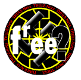
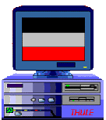

|
6. Februar 1997
Der Artikel erschient erstmals im
wildpark - Magazin im Frühjahr 1996.
(eingestellt im Sommer 1997)

... free speech for nazis? - Update 1.1
Neben den zahlreichen Mails zu dem Artikel "Free
Speech for Nazis" erhielt ich von einem User kürzlich
eine URL, die mich zu dem AOL-Homepagebereich führte.
Eine der ersten deutschen und kurzfristig verbotenen
Nazi-Mailboxen, Elias BBS, hat dort mit ihren Webseiten
Einzug erhalten. Der altbekannte Mix aus Links, News
über "antifaschistischen Terror" und
Junge-Freiheit-kompatiblen "Wir-sind-keine
Nazis-nur-konservative-junge-
Menschen-die-über-Tabus-sprechen-möchten" -Anspruch wird dort
von einem notorischen "Joschi" gehegt und gepflegt. Dank
Compuserves und AOLs preiswerter Möglichkeit, eigene Homepages zu
bauen, schiessen nun deutsche Sites mit faschistischem Inhalt wie Pilze aus
dem Boden: NPD, Nationaler Informationsdienst, etc.
So ist es auch kein
Wunder, daß zahlreiche Links auf der Elias Page mit einem blinkenden
NEW versehen sind. Ein Link entpuppt sich als Pfad zum Web-Domain des
berühmt-berüchtigten Thule-Netzes (online seit dem 10.07.96).

Thule-Netz - Germanische Esoterik-Kacke aus dem Norden
Das Thule-Netz wurde am 20.03.1993 vom System-Betreiber der
"Wider-stand BBS", Thomas Hetzer, alias: Alfred Tetzlaff@90:900/1,
in Erlangen gegründet. Ein dutzend anderer Mailboxen, u.a. auch die
Elias, sind an dieses Fido-Netzwerk angeschloßen, dessen Name von zwei
Quellen inspiriert ist. Thule galt im Altertum als das sagenhafte Land im
hohen Norden, und hat daher für esoterisch-germanisch veranlagte
Nazi-Recken einen gewissen Sex-Appeal. Doch es gibt auch einen Bezug in die
Neuzeit zur "Thule-Gesellschaft", eine 1918 gegründete,
extrem rassistische und anti-semitische Geheimgesellschaft des
Germanenordens. Das Thule-Netzwerk ist ein integraler Bestandteil der
deutschen Neo-Nazi Szene, da hier Aktive aus dem ganzen rechtsextremen
Spektrum Erfahrungsaustausch betreiben können und über die
Thuleinterne Datenbank Infomationen über politische Gegner abrufen
können. Ungehindert, muß man hinzufügen, da fast der gesamte
Datenverkehr innerhalb des Thule-Netzes mit PGP verschlüsselt wird.
O-Ton Thule
Im WWW stellt sich das Thule-Netz rührig vor:"Wenn
man die Öffentlichkeitsarbeit im rechten 'Lager'
betrachtet, so stellt man immer wieder fest, daß
zwar hervorragende Publikationen und Periodika existieren,
aber damit kaum Personen außerhalb unseres 'Ghettos'
erreicht werden. Mit dem THULE-Netz soll der Ausbruch
aus dieser verfahrenen Situation gewagt werden! Mit
den Mailboxen des THULE-Netzes wollen wir eine Gegenöffentlichkeit
schaffen - politisch, national. In den Mailboxen des THULE-Netzes stehen
Texte und Informationen zu Themen wie Anti-Antifa, Europäischer
Nationalismus, Gesellschaft, Jugendzeitungen, Kultur, Medien, Organisation,
Konservative Revolution, Recht, Zeitgeschichte und vielen anderen Bereichen
mehr. Über das Netz lassen sich nationale Aktivisten und Pressedienste,
Verlage und Parteien erreichen."
 Ausblick
So bietet
sich die Web-Version des Thule-Netzes als Plattform für andere national
gesinnte Verlage und Organisationen an. Bis dato findet man nur Werbung und
Instruktionen für den Gebrauch der Thule-Mailboxen, Links, einige
"harmlose" Textchen und potentielle Anbieter von revisionistischer
Literatur bis hin zum germanischen Schamanenlehrgang auf der Web-Site.
Der eigentliche Inhalt liegt weiterhin Passwort- und PGPgeschützt in
den Mailboxen. Erste Erfahrungen werden nun wohl gesammelt, um dann
später wohl ganz in das immer populärer werdende Netz der Netze
einzusteigen. Denn in jeder Hinsicht überwiegen die Vorteile einer
Web-Präsenz über die einer Mailbox- basierten Kommunikation. Der
Web-Server (www.thulenet.com) steht anscheinend sicher vor dem Zugriff
deutscher Sicherheitsbehörden im Ausland (der Amerikaner Don Black,
s. Free Speech for Nazis, ist mutmaßlich
behilflich) und im Gegensatz zu den Thule-Mailboxen können auch
technisch Unbedarfte die Thule-Page ansteuern. Für die
Öffentlichkeit nicht bestimmte Bereiche, und das ist der Großteil
des Thule Angebots, können genauso gesichert werden wie bisher. Der vom
Thule-Netz postulierte Anspruch, aus dem Ghetto des rechten Lagers
auszubrechen, wird im World Wide Web eingelöst.
Der Wildpark-User,
der mich auf die Elias-URL Aufmerksam machte, beendete sein Mail mit dem
konsenswürdigen Satz: "Obwohl ich auch für
Informationsfreiheit bin, kann und werde ich nicht akzeptieren, daß
solche Seiten angeboten werden, zumal das erst der Anfang ist, und sie immer
mehr mit diesem Medium arbeiten werden!" Wir bleiben weiterhin am Ball
und können hoffentlich bald von Aktionen berichten, die den Surf-Nazis
ein paar Schwierigkeiten bereiten werden...
Jörg Koch
Seitenanfang
Seitenanfang
© Copyright Pixelpark 1996
Layout: Birgit Pauli-Haack 1997
|